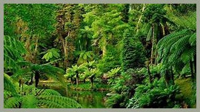
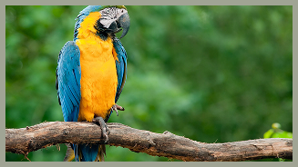
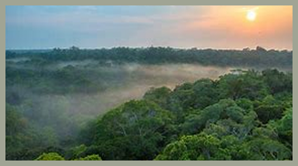
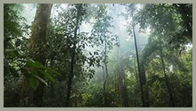

FLORESTA TROPICAL

Vegetação
As florestas tropicais apresentam vegetação extremamente densa e diversificada, com árvores de grande porte, arbustos e uma ampla variedade de plantas epífitas, como orquídeas e bromélias. Apesar da alta produtividade, o solo costuma ser pobre em nutrientes — a fertilidade é mantida principalmente pela rápida decomposição da matéria orgânica.

Fauna
A fauna da floresta tropical é extremamente rica e variada, incluindo uma grande quantidade de mamíferos, aves, répteis, anfíbios e insetos. Muitos animais são adaptados à vida nas copas das árvores, como macacos, preguiças, aves tropicais e répteis arborícolas.

Clima
O clima da floresta tropical é quente e úmido durante todo o ano. As temperaturas são elevadas e as chuvas são abundantes, resultando em alta umidade. Essa combinação favorece a manutenção da vegetação exuberante e do ciclo de vida contínuo.

Importância Ecológica
As florestas tropicais são os biomas mais biodiversos do planeta, abrigando milhões de espécies de seres vivos. Elas desempenham um papel crucial na regulação do clima global, especialmente na absorção de grandes quantidades de dióxido de carbono, ajudando a mitigar os efeitos das mudanças climáticas.
